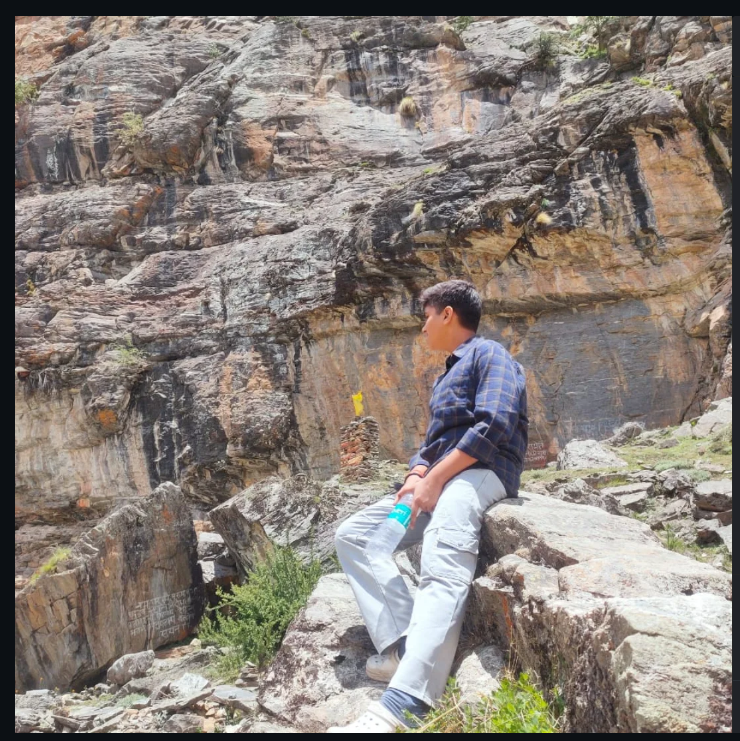

रसायन विज्ञान • Comprehensive Concept Portal & Solvers
Deep-dive into Class 9th CBSE & ICSE Chemistry: Matter, Purity of Substances, Atomic Structure, and Mole Concept calculations engineered by Founders Anmol Tiwari and Amrit Singh.
Calculate Mass % = (Mass of Solute / Mass of Solution) × 100
Combine Cations and Anions using valencies
Everything in the universe that has mass and occupies space is called Matter. Matter is made up of tiny particles with intermolecular space and attractive forces between them.
Latent Heat: The hidden heat energy required to change the state of a substance without changing its temperature.
Problem: Convert 300 K to Celsius scale and 25°C to Kelvin scale.
Solution: Temperature in °C = K - 273 = 300 - 273 = 27°C.
Solution: Temperature in K = °C + 273 = 25 + 273 = 298 K.
Pure Substance: Consists of a single type of particle (e.g., pure Gold, Water).
Mixture: Contains two or more pure substances mixed physically.
Problem: A solution contains 40 g of common salt in 320 g of water. Calculate concentration in mass percentage.
Mass of Solution = Solute (40g) + Solvent (320g) = 360 g.
Mass % = (40 / 360) × 100 = 11.11% (w/w).
Law of Conservation of Mass: Mass can neither be created nor destroyed in a chemical reaction. (Lavoisier)
Law of Constant Proportions: In a chemical substance, elements are always present in definite proportions by mass. (Proust)
1 Mole = 6.022 × 1023 particles (Avogadro Constant $N_A$).
Number of moles (n) = Given Mass (m) / Molar Mass (M)
Number of moles (n) = Given Particles (N) / 6.022 × 1023
Problem: Calculate the number of moles in 52 g of Helium (He, atomic mass = 4 u).
n = Given Mass / Molar Mass = 52 / 4 = 13 moles of He.
Bohr-Bury Scheme: Maximum electrons in nth shell = $2n^2$. K shell = 2, L shell = 8, M shell = 18.
Valency: Combining capacity of an atom determined by outermost shell electrons.
Isotopes: Same Atomic Number (Z), Different Mass Number (A) (e.g., Protium, Deuterium, Tritium).
Isobars: Same Mass Number (A), Different Atomic Number (Z) (e.g., Calcium and Argon both have A=40).
Problem: Chlorine occurs in nature as 75% Cl-35 and 25% Cl-37. Find average atomic mass.
Average Mass = (35 × 75/100) + (37 × 25/100) = 26.25 + 9.25 = 35.5 u.
The four core NCERT chapters above remain intact. These additional learning modules extend them with connected concepts, worked examples and revision checkpoints. They are supplementary topics, not additional official NCERT chapter titles.
No matching topics. Try another search.
Click any element box to view atomic structure and electronic configuration.
Select an element above to inspect details.
Explore how atoms are arranged and connected. Choose a molecule, then drag the model to rotate it in three dimensions.
Explore the science behind common laboratory techniques through safe, on-screen concept models. These are visual explanations, not instructions for performing experiments.
Filtration separates an insoluble solid from a liquid using a porous barrier. The liquid that passes through is called the filtrate; the solid left behind is the residue.
What to notice
The liquid passes through the filter while the larger insoluble particles are retained.
Select a technique, then replay its visual model.
All simulations are conceptual animations. Do not use this page as a guide for handling chemicals, heating substances or carrying out laboratory procedures.

Chief Visionary & Curriculum Architect

Academic Strategist & Tech Innovator